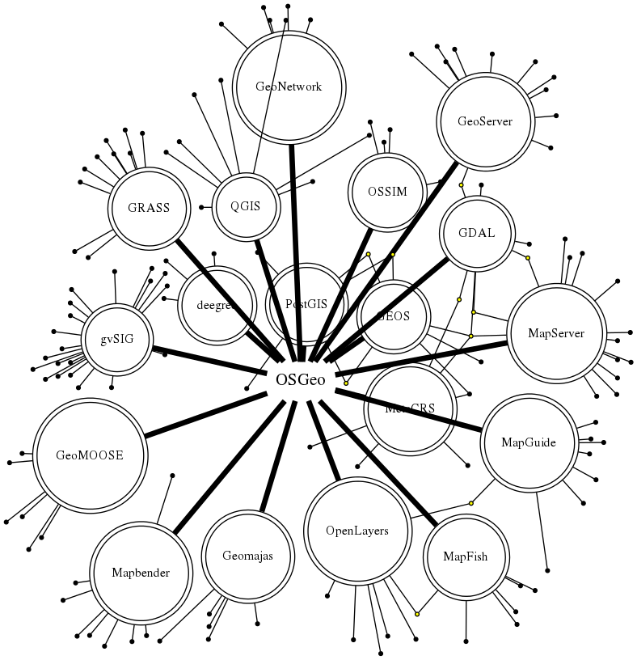

FOSS4G Communities
Who am I?
I'm a football fan
I'm a wine and asado lover
I'm a pseudo musician (aka noise maker)
I'm a FOSS4G evangelist
OSGeo
Open Source Geospatial Foundation
- Goals:
- To promote the use of Free Geomatics
- Software, Data and Open Standards
- To provide resources and quality assurance for foundation projects
- To encourage communication and cooperation between OSGeo communities
- To promote the use of Free Geomatics
- 20+ projects
- Web Mapping, Desktop, Metadata, Libraries
- OSGeo-Live
- OSGeo Advocates
OSGeo Umbrella
Local Chapters
- By Language or Geographic area
- OSGeo-es
- Since 2007
- Not just Spain
- Events: Jornadas de Girona, Jornadas Sudamericanas 2011, LatinOSGIS 2012, FOSS4G Buenos Aires 2013
- Osgeo-br
gvSIG Association
New ideas for a new model
Álvaro Anguix
(next speaker)
Geoinquietos
- Curious? Lively? Restless?
- Very local and casual initiatives
- Anarchy!!!
- Almería, Barcelona, Buenos Aires, Cantabria, Córdoba, Galicia, Madrid, México DF, Sevilla, Tenerife, Valencia
- Foz? Brasil?
Water related Use Cases
- More than 20 projects (in a week of research)
- 10+ specific software and plugins
- Sri Lanka, USA, Italy, Mali, Germany, Spain, Vietnam, France, Rumania, Canada
- PyWPS, Grass, GeoServer, OpenLayers, PostGIS, gvSIG, Sextante, Modflow, MapServer, Mapbender, GeoMoose, QuantumGIS, Deegree, GeoNetwork, istSOS, GeoExt, GDAL, GeoTrellis, 52° North SOS
How to participate?
Not just using
- Mailing lists (asking and answering)
- Testing
- Development
- Become an evangelist!